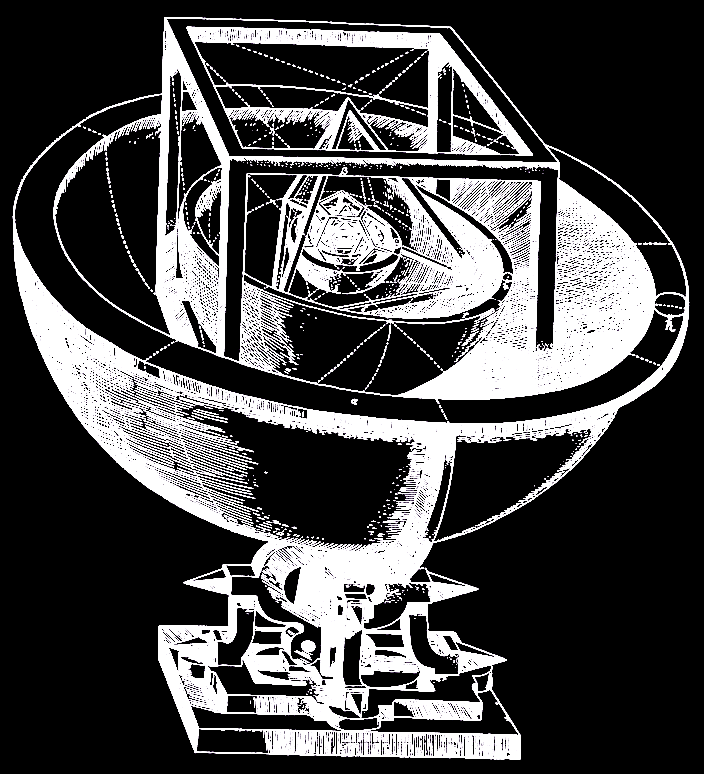

هنا يمكن تعبئة المجسمات الأفلاطونية بشكل متداخل مع احترام خصائصها التناظرية. يمكن إزالة المجسم الخارجي أو الداخلي بالنقر على الزر الموافق. لاحظ العلاقات العدة التي تظهر في هذه الطبقات.

حاول كيبلر في نظريته الأولى حول العالم أن يشرح أشعة مسارات الكواكب بأحجام المجسمات الأفلاطونية المتداخلة. نظرية إتضح لاحقاً أنها خاطئة